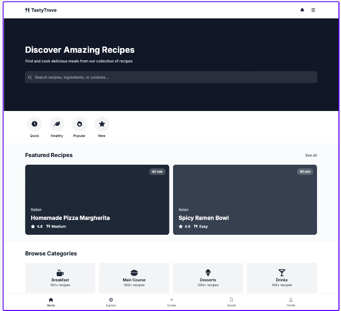
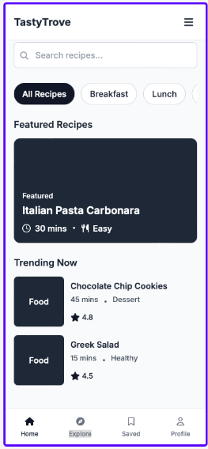

TastyTrove
The name consists of two parts: "tasty," which conveys delight and gastronomic pleasure, and "trove," which suggests a valuable, diverse, and hidden collection waiting to be explored. It's a name that is easy to remember and pronounce. It sounds professional with a fun touch, making it ideal for attracting both professional and casual cooks.
Domain avaible: tastytrove.org
TastyTrove is an innovative website designed to revolutionize the way users search for and discover recipes. My goal is to provide an intuitive and accessible platform for both professional chefs and casual cooks, making it easy to explore a wide variety of culinary recipes.
This website not only simplifies the search for recipes but also inspires users to experiment in the kitchen, offering personalized recommendations and highlighting the best options according to their culinary preferences.
Primary: #81B29A
Secondary: #E07A5F
Dark: #3D405B
Light: #F4F1DE
Highlight: #F2CC8F
Titles: Ubuntu
Body: Roboto
Desktop

Mobile
